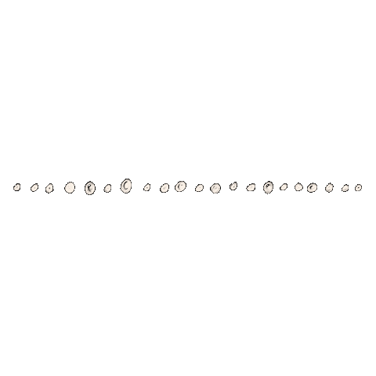
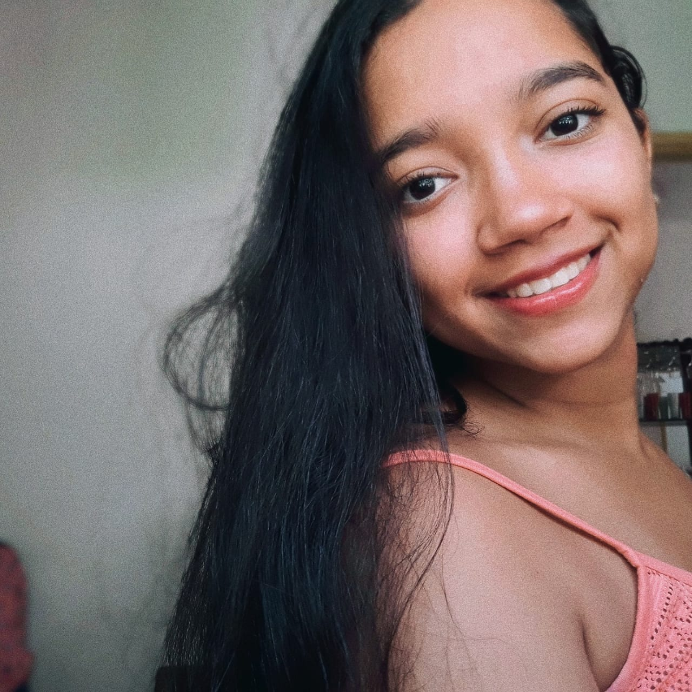

Quem sou eu ?


Olá ! Eu sou Larissa Mariano Araujo, tenho 16 anos, sou do interior da Bahia. Atualmente eu estudo
no Instituto Federal de Ciência e Tecnologia da Bahia (IFBA), faço o curso técnico de Eletromecânica
integrado ao Ensino Médio. Por que eu escolhi esse curso ? Bem, eu sempre me interessei pela área das
Ciências Exatas, principalmente pela Matemática, desde pequena eu sempre fui influenciada pelo meu pai,
já que tal matéria sempre foi sua maior afinidade, ao passar do tempo, eu continuei gostadno da área,
porém, se estendeu por outras áreas como física, astronomia, química, programação e dentre outras. Até
então eu não sabia que existia tanta repressão das mulheres no âmbito científico,acabei descobrindo quando
comecei a cursar Eletromecânica, onde a maioria são meninos,fiquei com um pouco de receio, no entanto,
isso foi uma válvula de escape para que eu continuasse gostando e disseminando as ciência para todas, afinal,
lugar de mulheres e meninas é onde elas quiserem.
